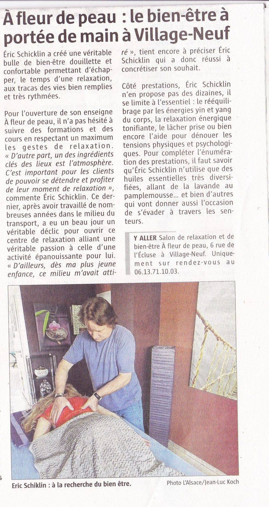

C'était ma deuxième visite et j'ai adoré. Le studio est confortablement aménagé, la température est parfaitement maîtrisée et la musique d'ambiance discrète ainsi que l'éclairage créent une atmosphère agréable. Après une brève consultation (concernant vos souhaits, vos suggestions, vos projets de vacances et la météo), vous choisissez votre massage (parmi une dizaine d'options) et sa durée (30, 60 ou 90 minutes). Le massage est réalisé avec beaucoup de professionnalisme et d'attention. Malheureusement, le temps passe beaucoup trop vite, mais j'y retournerai sans hésiter. Je le recommande vivement.
Eric est un excellent massothérapeute. Il s'adapte à chaque client et à ses besoins, en tenant compte de son état physique, émotionnel et même de son état. Je cherchais un massage du visage, notamment du cou et du décolleté, pour un effet liftant. En Ukraine, j'ai rencontré un excellent professionnel et je cherchais ici, près de Bâle. Je suis ravie d'avoir trouvé cet endroit. Après seulement quelques séances, j'ai constaté un effet liftant : ma peau est plus ferme et paraît plus jeune. Je suis ravie. Je suis passée à deux massages par mois, soit dix séances par semaine. En général, cette technique soulage également le stress. Un bon massage de la tête et de la nuque, qui donne un véritable coup de boost au visage et à d'autres zones du visage. Je recommande. La salle est très confortable, propre, belle, en général super !
On m'a offert un massage, et je ne savais pas que je me rendais dans un cabinet de médecine chinoise, je fut très agréablement surprise! M. Schicklin est extrêmement doué et gentil. La séance à été très bénéfique des le 1 er soir passée la consultation. Un grand merci à vous et certainement à une prochaine fois
Détente garantie! Je recommande vivement!
⭐⭐⭐⭐⭐
Accueil très sympathique dans un décor magnifique et zen....détente et relaxation totale...je recommande
N'hésitez plus, vous ne le regretterez pas ce moment de relaxation totale...merci à Eric!
Un moment de détente, dans un cadre magnifique avec une personne agréable et très à l'écoute avec qui l'on se sent vraiment à l'aise.
⭐⭐⭐⭐⭐
Très heureuse du professionnalisme, je le recommande..toujours un plaisir d y retourner...
je suis très contente de vous avoir connu vous faites du bon travail. Je me suis détendue
⭐⭐⭐⭐⭐
Exceptionnel!
Merci à vous pour ce massage. Très bon moment.
⭐⭐⭐⭐⭐
Très agréable rendez vous. Très à l'écoute et prestation vraiment agréable. Je recommande vivemment. Découvert grâce à une amie et clairement je compte bien revenir ! Massage vraiment effectué en fonction des besoins. Et c'est appréciable! Un grand merci à vous !
Super massage à faire, détente absolue surtout n'hésitez pas à en profiter vous ne le regretterez pas
⭐⭐⭐⭐⭐
Superbes moments à chaque fois (client depuis qq années). Malheureusement je n’y vais que lorsque j’ai mal au dos. Je ressors à chaque fois léger et les douleurs disparaissent. Très grand professionnel. J’adore et conseille !
Deuxième visite, savoir faire toujours aussi professionnel. Se rend compte tout de suite des soucis présents (a trouvé me dos tordu sur quel vertèbre sans radio). Fortement recommandé au vue de son savoir faire varié.
Mr Schicklin un vrai professionnel, déjà une ambiance apaisante il sait vous mettre à l'aise il est d'une grande gentillesse et a de grands compétences dans son travail. Il maîtrise plusieurs techniques qui sont très efficaces, les ventouses que j'ai déjà testées et même au niveau des massages c'est magique j'avais des douleurs depuis des semaines que même le kiné n'a pas réussi à me soulager et en allant là-bas je suis rentrée comme sur un petit nuage. Je l'ai déjà recommandé à plusieurs personnes qui n'ont pas du tout été déçues.
J'y emmène ma maman qui à 80 ans et qui souffre de polyarthrite, elle était réticente à l'idée d'y aller. Dès la fin de la première séance elle a immédiatement repris RV. En sortant elle me dit je suis au paradis. Et c'est vrai, Eric à pris soin d'elle de son arrivée à son départ très avenant face aux douleurs. Merci, merci, merci. Nous reviendrons au printemps.
Un moment de détente rien que pour soi. Avec une personne très à l'écoute et dans cadre magnifique et zen !
Très bel endroit, j'ai essayé le massage du visage c'est grandiose , les doigts d'Éric sont magiques, je ne peux que vous recommander cette évasion de détente ! ! !
A la fois un moment de bien être et une séance thérapeutique, Éric Schicklin propose des massages de très haute qualité. Mon point faible : le dos. Je repars légère, les muscles détendus, les tensions évaporées...
Bonjour à toutes et tous. Quelques mots pour exprimer ma satisfaction concernant les soins pratiqués par Mr Schicklin. J'ai une amie qui me l'a recommandé et en effet il sait appuyer la où ça fait mal (par exemple digitopuncture que je pratique moi même dans mon cabinet) ainsi que différents massages en fonction des douleurs ou symptômes à travailler. Merci aussi pour les soins liftants qui me font beaucoup de bien. Bref...... à découvrir, ambiance chaleureuse assurée.
Eric a des doigts de fée, et de plus, il se donne beaucoup de peine et de son temps pour soulager vos douleurs. Allez le consulter, il m'a bien mieux aidé que mon ostéopathe.
Suite à un lumbingo, complètement bloqué du dos, je me suis rendu dans le cabinet "A Fleur de Peau" et Éric pendant une bonne heure, dans un cadre très zen, a réellement pu me soulager à l'aide de ses mains et de ses ventouses en bambou. Je ne peux que recommander...
Un instant de pure détente et de bien être..une remise en forme et une zen attitude absolu après la séance de massage... un masseur expert :)
Sportive de haut niveau, avoir un « chinois » efficace dans son carnet d’adresse ça vaut de l’or. Je recommande plus que ça, au top monsieur le guérisseur
Très bons massages et efficaces. Je conseille
Le salon A Fleur de Peau offre un cadre chaleureux et les soins y sont révolutionnaires. Le kobido, massage du visage que j'ai choisi, est un lifting sans chirurgie et le résultat est magique!